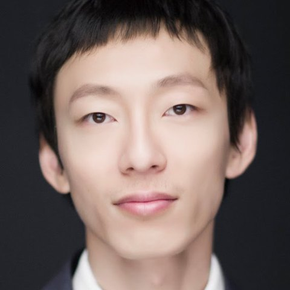
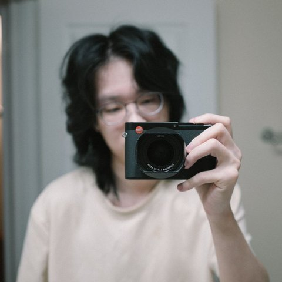
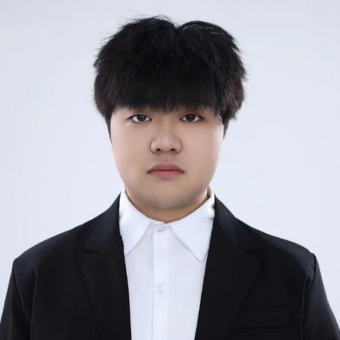

Proposal under review for CVPR 2027
PixGen
Rethinking the generation space for visual generative models
Which space should a generator work in, and why?
Every visual generator makes one choice before training begins: the space it generates in. For years, that was the latent space of a pretrained autoencoder. That default is now open.
Pixel diffusion is the clearest sign. Diffusion transformers that generate directly in pixels, with no autoencoder at all, now match latent diffusion on ImageNet and scale to 1024² text-to-image generation. Dropping the autoencoder drops its costs with it: the ceiling on fine detail, the encode–decode artifacts in editing, and a separate tokenizer for every new modality.
The same question is open from other directions. Representation encoders are replacing reconstruction VAEs, few-step distillation is redrawing the cost of every space, and unified models understand and generate without any encoder. PixGen makes the generation space itself the object of study, across image, video, 3D, and world models.
Five questions the workshop asks
- What makes a space good for generation: compression, semantic structure, invertibility, or none of them?
- How do training objectives, from clean-image prediction and perceptual and adversarial losses to representation alignment, interact with the space?
- What does each space cost at 4K, for video, and under few-step distillation?
- Can one space serve generation, dense perception, and multimodal understanding together?
- Should generation stop at sRGB pixels, or move toward what a camera or sensor actually measures?
Topics
Topics include, but are not limited to:
- Pixel-space and autoencoder-free generation
- Latent, representation, and token spaces
- Priors from vision foundation models
- Few-step and real-time generation
- High-resolution and video generation
- Unified generation and perception
- Beyond sRGB: RAW, HDR, depth, 3D, and function spaces
- Evaluation and equal-compute comparisons of spaces
- Provenance and detection for high-fidelity generators
Call for papers
PixGen invites work on the spaces visual generators work in: pixels, latents, representations, tokens, and physical measurements, and on how that choice shapes fidelity, efficiency, resolution, and unified generation and understanding.
Submissions on any of the topics above are welcome. Following CVPR 2027 policy, an author may appear on at most 10 submissions. Papers should state their training data sources and compute.
Archival track
Full papers of up to 8 pages, excluding references, in the CVPR 2027 format. Accepted papers are published in the CVPR 2027 Workshop Proceedings. The deadline falls after CVPR 2027 main-conference decisions.
Non-archival track
Extended abstracts of up to 4 pages, and papers recently accepted at other venues. These are presented at the workshop but not included in the proceedings, which makes the track a venue for student work in progress.
Important dates
Dates are tentative until the workshop is accepted. Deadlines are 23:59 anywhere on Earth.
| Submission site opens | January 15, 2027 |
| Archival paper deadline | March 5, 2027 |
| Archival notification | March 24, 2027 |
| Author metadata to CVPR | March 29, 2027 |
| Camera-ready to CVPR | April 23, 2027 |
| Non-archival deadline | April 23, 2027 |
| Non-archival notification | May 12, 2027 |
| Workshop | June 20 or 21, 2027 |
Review process
All submissions are managed on OpenReview, and complete author profiles are required. Each new submission receives at least three double-blind reviews and a meta-review by an organizer. Recently accepted papers are screened for topical fit. Organizers with a conflict of interest are recused from reviewing and award decisions. Student authors join the reviewer pool.
Awards
Three awards are selected by the best paper committee: Best Paper (USD 1,000), Best Paper Runner-up (USD 500), and Best Student Paper (USD 500, for a student first author). The awards are sponsored by Adobe.
Program
Six invited talks, an oral session with the three top-reviewed papers, and a closing poster session for all accepted papers.
Times are shown for a morning slot. The same program runs unchanged in an afternoon slot. Audience questions are collected on a live online board.
| 08:30 – 08:40 | Opening remarks |
| 08:40 – 09:00 | Invited talk 1 |
| 09:00 – 09:20 | Invited talk 2 |
| 09:20 – 09:40 | Invited talk 3 |
| 09:40 – 10:10 | Oral presentations, three papers including the award papers |
| 10:10 – 10:25 | Coffee break |
| 10:25 – 10:45 | Invited talk 4 |
| 10:45 – 11:05 | Invited talk 5 |
| 11:05 – 11:25 | Invited talk 6 |
| 11:25 – 11:35 | Paper awards and closing remarks |
| 11:35 – 12:10 | Poster session, with speakers and organizers on the floor |
Invited speakers
Six speakers who build generators in pixel, latent, representation, and measurement spaces. Talk topics are tentative.
-
Thomas Mensink
Research Scientist, Google DeepMind
Pixels versus learned latents at scale
-
Wei Xiong
Senior Research Scientist, NVIDIA
Pixel diffusion transformers, from autoencoder-free to representation-grounded
-

Zhifei Zhang
Senior Research Engineer, Adobe Research
Precise editing and control in pixel space
-
Julius Berner
Research Scientist, NVIDIA
Few-step generation in any space
-
Valentin Gabeur
Staff Research Scientist, Google DeepMind
Image generators as generalist vision models
-
Felix Heide
Professor of Computer Science, Princeton University
Generation spaces beyond the RGB pixel
Organizers
A team from academia and industry that has shipped generative models to millions of users and co-authored much of the recent pixel-space work.
-
Lehan Yang
Ph.D. Student, University of Virginia
-
Xin Lin
Ph.D. Student, UC San Diego
-
Sheng Li
Associate Professor, University of Virginia
-
Haitian Zheng
Research Scientist, Adobe Research
-
Zhe Lin
Senior Principal Scientist, Adobe Research
-
Varun Jampani
Chief AI Officer, Arcade AI
-
Chen Wei
Assistant Professor, Rice University
-

Daiqing Qi
Senior Applied Scientist, Microsoft
-

Baiang Li
Ph.D. Student, Princeton University
Questions about the workshop go to Lehan Yang at lehan.yang.cs@gmail.com.
Reading list
A public, growing list of papers on the generation space. Suggestions are welcome by email.
Pixel-space generation without an autoencoder
- Simple diffusion: End-to-end diffusion for high resolution images2023
- Scalable High-Resolution Pixel-Space Image Synthesis with Hourglass Diffusion Transformers2024
- Simpler Diffusion (SiD2): 1.5 FID on ImageNet512 with pixel-space diffusion2024
- PixelFlow: Pixel-Space Generative Models with Flow2025
- PixNerd: Pixel Neural Field Diffusion2025
- Back to Basics: Let Denoising Generative Models Denoise2025
- PixelDiT: Pixel Diffusion Transformers for Image Generation2025
- DeCo: Frequency-Decoupled Pixel Diffusion for End-to-End Image Generation2025
- PixelGen: Improving Pixel Diffusion with Perceptual Supervision2026
- PixelControl: Fine-Grained Condition Fidelity in Text-to-Image Diffusion2026
- Adversarial Training for Pixel Diffusion2026
- PixelDense: Dense Prediction as Representation Alignment for Pixel Diffusion2026
Latent, representation, and token spaces
- Representation Alignment for Generation: Training Diffusion Transformers Is Easier Than You Think2024
- Diffusion Transformers with Representation Autoencoders2025
- PixPerfect: Seamless Latent Diffusion Local Editing with Discriminative Pixel-Space Refinement2025
- Scaling Text-to-Image Diffusion Transformers with Representation Autoencoders2026
- Unified Latents (UL): How to train your latents2026
- ChopGrad: Pixel-Wise Losses for Latent Video Diffusion via Truncated Backpropagation2026
- UltraDiff: Transferring High-Fidelity Priors to Compressed Latent Spaces for High-Resolution Image Generation2026
Few-step generation
Unified generation and perception
- Unified Dense Prediction of Video Diffusion2025
- Tuna-2: Pixel Embeddings Beat Vision Encoders for Multimodal Understanding and Generation2026
- HiDream-O1-Image: A Natively Unified Image Generative Foundation Model with Pixel-level Unified Transformer2026
- SenseNova-U1: Unifying Multimodal Understanding and Generation with NEO-unify Architecture2026
- PixelUMM: Encoder-Free Unified Image and Video Understanding and Generation2026